DoH is DNS over HTTPS. DoH encrypts DNS queries by sending them over HTTPS, enhancing privacy and security by preventing eavesdropping and manipulation of DNS data.
DoH will encrypt your DNS requests so lets see what that looks like, and what is able to be seen from a packet capture.
I set up a new virtual machine with Linux Ubuntu installed and Firefox in previous scenarios. I am continuing to use the same operating system.
This time I have made some changes to the Firefox settings to require DoH.
Here I have enabled HTTPS-Only Mode.
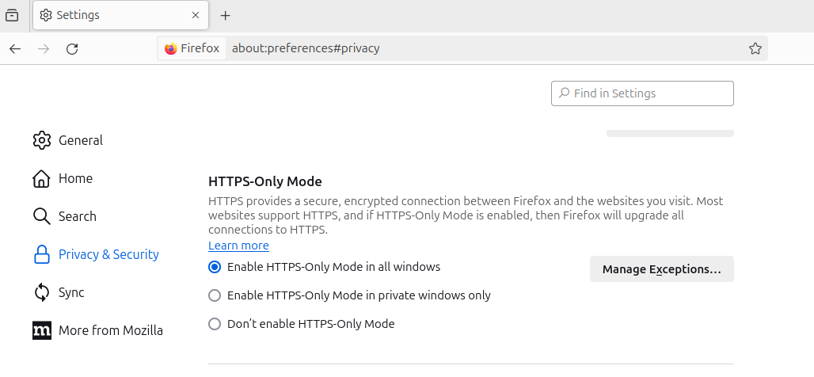Here DNS over HTTPS is set to always use secure DNS.
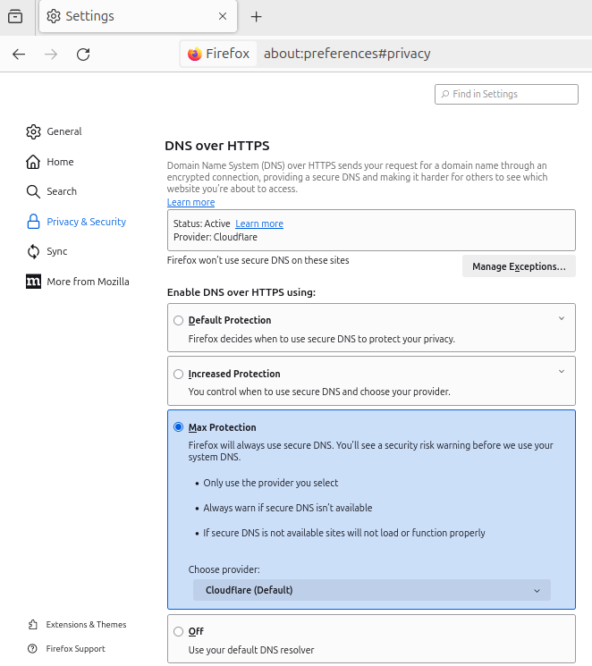I will again look to capture packets from the same Ubuntu host that is browsing to see what exits the local host, and again on the OPNSense firewall between my router and the ISP ONT to see what exits my home network. I will also examine the Zenarmor NexGen Firewall Plugin live logs to watch for connections being made and traffic.
I hope to see only encrypted traffic in this scenario.
The website used will be https://duckduckgo.com/. I set all devices to capture traffic, then load the webpage.
I capture all traffic using tcpdump and write it out to a file.
sudo tcpdump -w scenario4httpsdohubuntu.pcapReading the packet capture file and filtering for port 53 shows all the DNS queries. Duckduckgo is not in the list of requests so this must be encrypted and not able to be deciphered. Cloudflare DNS is shown here which is the provider selected in the Firefox DNS over HTTPS settings.
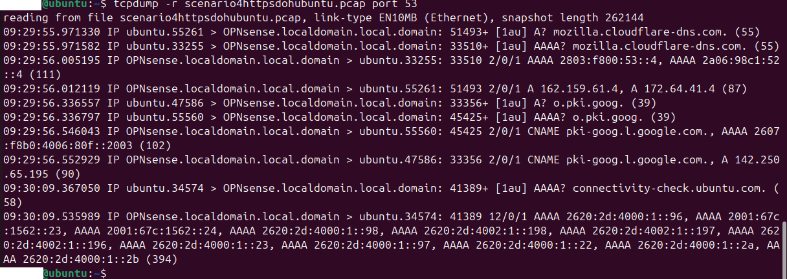There were no visible ‘GET’ commands and Duckduckgo did not appear anywhere in the packet capture. Even the domain name is hidden when using DoH.
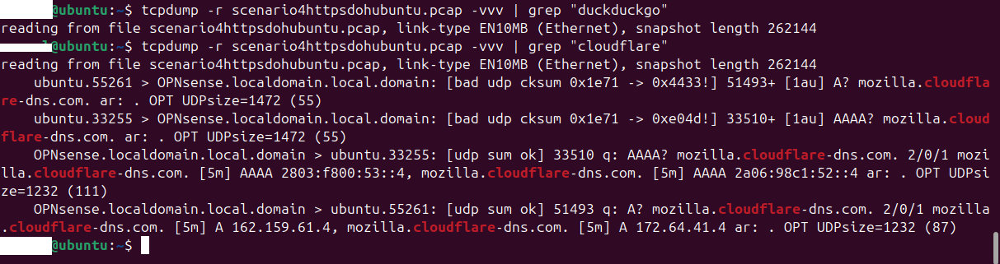Traffic must still flow from the duckduckgo server though. So resolving the http://www.duckduckgo.com address using the dig command shows the IP address.
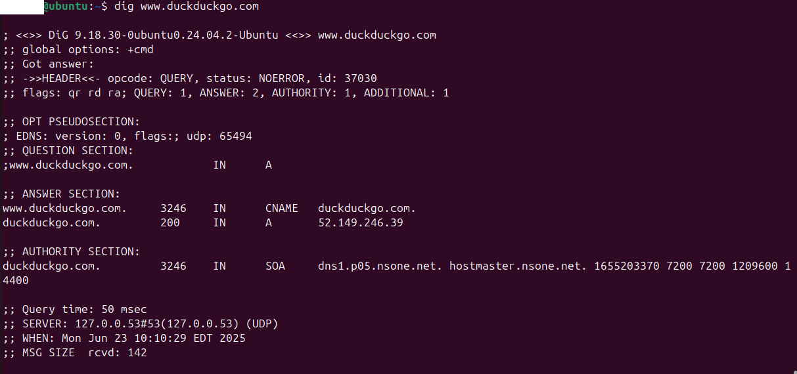Armed with this information we can see there was indeed traffic from Duckduckgo’s IP address to the computer.
tcpdump -r scenario4httpsdohubuntu.pcap host 52.149.246.39This required a few more steps, but an ISP would still be able to see where traffic is coming from even though the DNS requests are encrypted. Unencrypted DNS queries just make it easy for eavesdroppers.
Inspecting the firewall’s live logs showed no DNS requests for Duckduckgo. This makes sense since they are encrypted.
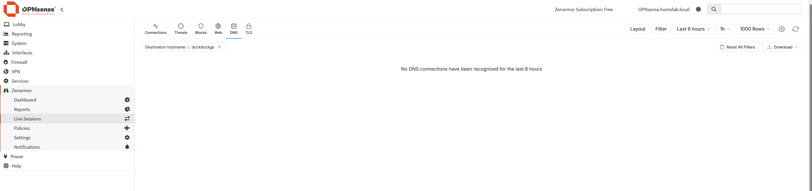The firewall did see the same cloudflare DNS traffic as the Ubuntu workstation.
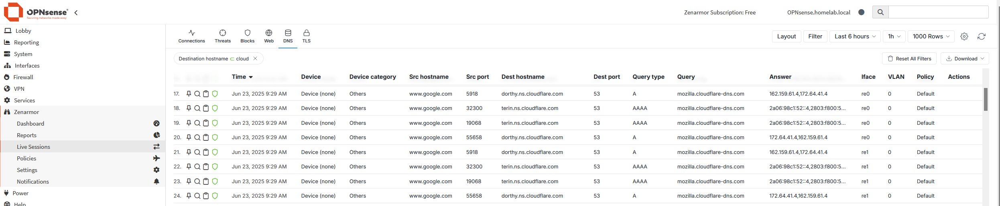In the TLS tab of the live logs the firewall does show traffic to Duckduckgo.
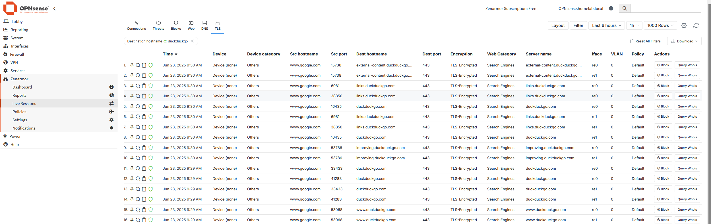I am assuming the firewall is doing automatic lookups to the IP address to show this information.
I loaded the packet capture from this firewall into Wireshark for further analysis.
Wireshark is filtering out port 53 to view DNS queries. Seen in here is the DNS request for cloudflare but no mention of Duckduckgo itself.
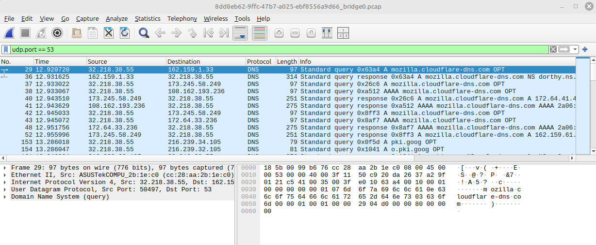Wireshark filtering for Duckduckgo only gives us encrypted traffic.
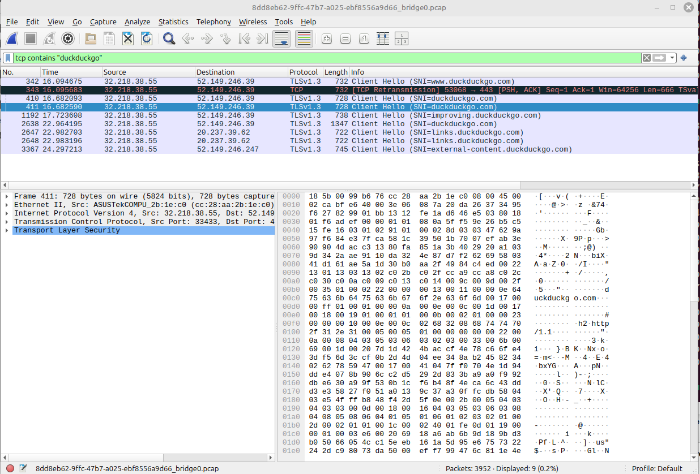Wireshark filtering for the Duckduckgo IP address we found previous shows encrypted traffic but nothing is able to be made out in terms of content.
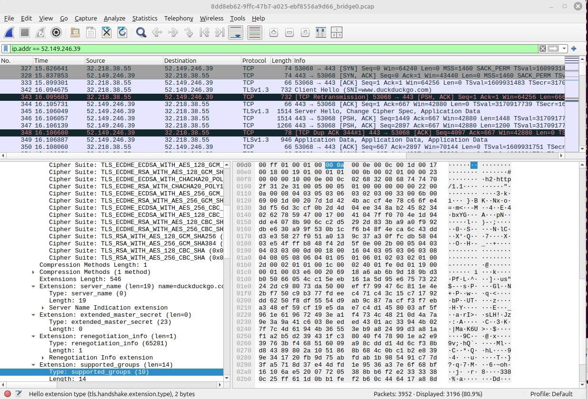This is the last hop where I can capture packets. This is the same data that is being seen outside my home network.
Webpage content is hidden, as are the requests to resolve a web server into its IP address.
DoH encrypts the DNS queries, but your computer still is communicating with the IP address of a remote server, which can be looked up.
Encrypting DNS queries is gaining momentum and becoming the norm in our world of ever increased risk and security.
Anyone intercepting traffic can still see source and destination IP addresses.
This is the equivalent of sending an encoded letter through the mail. If someone opens your letter they cant read it, but the postman still needs to know where to deliver the mail.
That’s it!